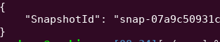
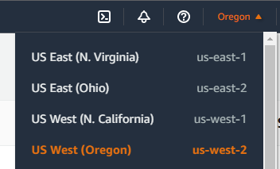
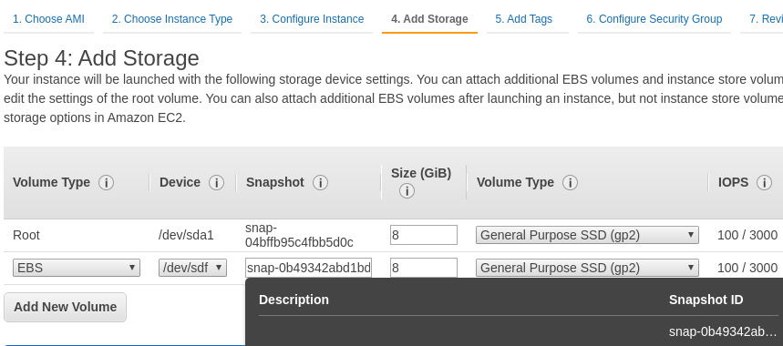

The complexity of cloud-based applications can lead to a vast number of security issues. To show how these issues can occur, Summit Route's flaws.cloud exercises contain an intentionally vulnerable set of cloud deployments on AWS that users can exploit to gain unauthorized access.
In this codelab, we will walk-through how to exploit each deployment.
Access the AWS CLI and then visit the site at http://flaws.cloud .
Information gathering is one of the first steps that penetration testers perform in order to compromise a site. We will use this to gain access to an open storage bucket that contains the contents of the site itself.
Both the dig and nslookup utilities allow one to find information related to the IP address of the site. On a Linux machine, perform the following to resolve the DNS name of the site.
dig flaws.cloudCopy and paste the IP address returned into a web browser and attempt to access it directly (e.g. http://w.x.y.z) to see what it returns.
Anyone can create a DNS name and point it to an IP address (even one they don't own). However, IP address ranges are allocated to specific institutions. In North America, ARIN manages the allocation. One can use dig to perform a reverse-lookup on the IP address to determine ownership of the IP address flaws.cloud is using. Run the command for doing so
dig -x <IP_Address>When sites are hosted out of an S3 bucket, they can be accessed via the URL http://<site>.s3-website-<region>.amazonaws.com.
When one is given listing access for a bucket, the contents (e.g. the bucket's manifest) can also be accessed via URL. The format for that is simply: http://<site>.s3.amazonaws.com
In viewing the results of the prior step, a listing of the bucket is obtained. This is a misconfiguration on the part of the bucket owner in allowing public listing access to the bucket. The listing reveals a secret HTML file. You can directly append the filename to the site's URL to access it.
http://<site>/<secret_file>One must ensure all unintended accesses to a bucket are restricted. In this level, the bucket in question has been locked down, but not quite all the way.
Using the prior method, attempt to list the bucket as an unauthenticated user via the web by going to:
http://<site>.s3.amazonaws.comPublic access to listing the bucket has been properly removed. It appears that authentication is being done to ensure no unauthorized access happens. To test this, we will attempt to use the profile we configured earlier in the AWS CLI to access the bucket. Note that the credential is associated with an account that has nothing to do with flaws.cloud.
Go back to the EC2 instance and use the CLI to try and list the level bucket. Note that the command specifies the region to look for the bucket in.
aws s3 ls s3://<site>/The bucket has been set so that its contents can be listed by any authenticated AWS user account. This setting is deceptive since it does not refer to AWS user accounts associated with flaws.cloud, but any AWS account (as described in the level's writeup with Shopify). There's a secret HTML file that is stored in the bucket. As before, we can then access it from the web site directly. Do so to find the URL for the next level
http://<site>/<secret_file>Access keys are the keys to an AWS account's kingdom. They should immediately be revoked if they are accidentally revealed. Key leakage can occur in many different ways, unfortunately. In this level, it will occur via source control history.
Attempt to list the bucket as an unauthenticated user via the web by going to:
http://<site>.s3.amazonaws.comThe results show the site's files including a git repository.
In the CLI view the bucket listing.
aws s3 ls s3://<site>/Then, attempt to copy the robots.txt file from the bucket locally. For this command, we will use the --no-sign-request so that the request is anonymous.
aws s3 cp --no-sign-request s3://<site>/robots.txt .Use the sync command to copy the entire bucket over into a directory called 'level3'
aws s3 sync --no-sign-request s3://<site> ./level3Change into the level3 directory. We will now navigate the git repository within it. Perform the following to get the git history for the repository that is associated with the bucket's contents.
git logExamine the commit history. The current version is listed first. There is a prior version of the repository listed as well. Roll back the repository to that version via
git checkout <commitID>Where the commitID has at least the first 4 characters of the hash of the commit.
Perform a directory listing to reveal a file that was accidentally added, then deleted in the subsequent commit. The file reveals AWS keys that can now be leveraged for further access. Configure a profile called flaws with these keys
aws configure --profile flawsSet the default region name to us-west-2.
Using the new credentials, show all of the storage buckets it can list.
aws s3 ls --profile flawsThe names of the subsequent levels are revealed in the listing. While it may seem like you now have access to the rest of the levels, you don't.
level6 URL and show the results. Only the level4 (e.g. the next level) can be accessed directly. Visit the site to continue.
Similar to the previous example with old versions of files being stored in git repositories, when keys are stored in the file system, they can then show up in backup copies that are made of the file system. In the cloud, snapshots of disks and databases can be searched for key material much like git repositories can.
Visit the target web site given in the Level 4 description to see that it has been protected via HTTP Basic-Authentication. Our goal is to get the username and password to let us in. Using the credentials from the previous level, we can find out who it belongs to via AWS's Secure Token Service. The introspection of credentials is helpful when seeking to use them to navigate a project.
aws sts get-caller-identity --profile flawsThe command reveals that these credentials belong to a 'backup' account as well as the AWS Account ID it is associated with.
The site that runs the website may have snapshot backups that we can access. We can see what snapshots of EC2 instances we have access to for a particular AWS Account in a particular region (us-west-2) using the following command:
aws ec2 describe-snapshots --owner-id <AWS_Account_ID> --profile flaws --region us-west-2If we wish to find out how many EC2 snapshots we can access generally, we can run the following command (wait 1 minute to complete):
aws ec2 describe-snapshots --profile flawsMany snapshots are publicly accessible.
aws ec2 describe-snapshots --profile flaws | wc -lThe snapshot we have discovered resides in the us-west-2 region. Unfortunately, if you are using AWS Academy, you can only bring up resources in the us-east-1 region. As a result, we must first copy the snapshot over to our region. To do so, perform the following copy command. Note, that we do not specify a profile since we want this to use our own AWS environment.
aws ec2 copy-snapshot --region us-east-1 --source-region us-west-2 --source-snapshot-id <ExposedSnapshotId> --description "flaws4 volume copied"You will then get back another SnapshotID, but this time, one that resides in us-east-1.

If you get an error, you may use the instructor's copy instead via the command below.
aws ec2 copy-snapshot --region us-east-1 --source-region us-east-1 --source-snapshot-id snap-07a9c50931c651cf8 --description "flaws4 volume copied"
rr
The copy will take some time to complete so we will need to wait a minute or we'll receive an error when attempting subsequent steps. After the copy completes, we can now create a disk volume in our own AWS account from the snapshot above via its ID using the command below:
aws ec2 create-volume --availability-zone us-east-1a --region us-east-1 --snapshot-id <YourSnapshotId>Then, within the EC2 console, launch a Ubuntu instance on a t2.micro instance in us-east-1 (N. Virginia) and when adding storage, add a new volume, search for the SnapshotId, and add it using device /dev/sdf.

Doing so will attach the volume (/dev/xvdf1) and make it available in the EC2 instance. Set up an ssh key for accessing the instance, then ssh into the instance.
Make a new directory with the name of your OdinID, mount the volume to the new directory, and then cd into its home directory.
sudo mkdir /<YOUR_ODINID>
sudo mount /dev/xvdf1 /<YOUR_ODINID>
cd /<YOUR_ODINID>/homeWithin the home directory of the ubuntu user, a file is found containing the command used to setup the Basic-Authentication credentials of the site. The credentials have been exposed by its snapshot backup! Go back to the previous site and log in using the credentials discovered.
Web proxies can be dangerous to deploy in the cloud. They may be used to proxy requests to private resources that were intended to remain secret. In this level, a web proxy is used to launch a server-side request forgery attack (SSRF) that accesses sensitive key material. We can ask the proxy to fetch any website for us by appending the URL to the "proxy" endpoint and terminating with a "/".
To see how the proxy functions, visit the EC2 web site that is given and use its proxy feature to have it retrieve the Summit Route blog feed.
Now, visit the link to the original site to see that the proxy has retrieved the content web site and returned it back to you directly.
Recall that the level6 URL visited in Level 3 gives an access denied and informs you that you need to play Level 5 properly to find the subdirectory Level 6 actually resides in. Use the level6 URL to see if an access to it can be made by the proxy.
Step 3:
The metadata configuration service for any compute instance is served via a private, internal IP address that is not directly accessible from external IP networks. Most compute instances running in the cloud have both an external and an internal IP address. When the compute instance runs a proxy, the proxy can be used to access the internal addresses that are not meant to be externally accessible. One such 'magical' internal IP address is AWS EC2's 169.254.169.254 address for its metadata service.
Then, navigate the metadata service to find the AWS credentials of the EC2 instance. (e.g. /latest/meta-data/iam/security-credentials/flaws/)
Within the service, one can access information about the running instance including the security credentials associated with it. Use the proxy to navigate the exposed service to find the latest, meta-data that reveals the IAM security credentials for the account running the proxy (flaws). Enjoy the scenery as you dig down into the service.
Using the obtained credentials create a profile called level5 with it and place its default region in us-west-2.
aws configure --profile level5Note that the credentials revealed in metadata also contains an ephemeral AWS session "Token". Edit the ~/.aws/credentials file and set the aws_session_token parameter to the level5 profile.
[level5]
aws_access_key_id = ASIA...PXZ
aws_secret_access_key = 1IAt...Q43
aws_session_token = IQoJ...A==Using the obtained credentials list the contents of the level6 bucket discovered previously to find the hidden sub-directory. Then, append the directory to the level6 URL to reach the Level 6 description.
Security policies in the cloud can include over-provisioned permissions allowing access to resources that should not be accessible. In this level, an ancillary policy is attached to a user that should not be. The user's real-life role is as a security auditor. The additional policy allows the user to then gain access to additional resources.
Use the initial credentials given in the level to create a profile called level6 with it and place its default region in us-west-2.
aws configure --profile level6Similar to earlier levels, the CLI allows us to find out essential information about the credentials we've obtained.
Use the commands below and show the following (highlighting each in the output):
aws iam get-user --profile level6aws iam list-attached-user-policies --user-name Level6 --profile level6 aws iam get-policy --policy-arn <PolicyArn> --profile level6 aws iam get-policy-version --policy-arn <PolicyArn> --version-id <DefaultVersionId> --profile level6 Action on what Resource does this policy allow?APIs are typically implemented as serverless functions. On AWS, these are referred to as Lambda functions. The policies attached to this user allows the auditor to list the functions associated with the AWS account.
aws lambda list-functions --profile level6 --region us-west-2As the output shows, there is a starter AWS Lambda function that has been deployed, including its name, ARN, its language runtime, and the amount of memory it has been allocated upon invocation. One can list the IAM policies that are attached to this function via the command:
aws lambda get-policy --function-name <FunctionName> --profile level6 --region us-west-2Action has been allowed and the Resource it has been allowed on. As part of the output, the policy lists the REST API ID it has been given access to via the Condition field. Pulling the ID out of output, we can then list its stages. Stages are different deployments for an API. For example, a function might have a development stage and a production stage that it might associate with an endpoint. Use the command below to list the stages for the API.
aws apigateway get-stages --rest-api-id "s33ppypa75" --profile level6 --region us-west-2The listing reveals the name of the stage associated with the API. We can now access the API via its URL.
https://s33ppypa75.execute-api.us-west-2.amazonaws.com/<stageName>/level6The URL revealed takes you to the end of the exercise.